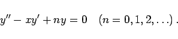
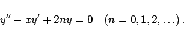

Inhalt Index DeskTop Bronstein

 Differentialgleichungen Gewöhnliche Differentialgleichungen Differentialgleichungen höherer Ordnung und Systeme von Differentialgleichungen Lineare Differentialgleichungen 2. Ordnung
Differentialgleichungen Gewöhnliche Differentialgleichungen Differentialgleichungen höherer Ordnung und Systeme von Differentialgleichungen Lineare Differentialgleichungen 2. Ordnung


In der Literatur sind zwei Definitionsgleichungen der HERMITEschen Differentialgleichung gebräuchlich:
|  | (9.63a) |
|  | (9.63b) |
Partikuläre Lösungen sind die HERMITEschen Polynome, die entsprechend in zwei Varianten auftreten, als Hen(x) zu Definitionsgleichung 1 und als Hn(x) zu Definitionsgleichung 2.
| Hen(x) | = | ||
| = | (9.63c) |
| (9.63d) |
| (9.63e) |
Die Orthogonalitätsrelation lautet:
| (9.63f) |
Bezüglich der ersten Polynome s. Physikalische Lösungen. Der Zusammenhang mit den HERMITEschen Polynomen zur 1. Definitionsgleichung lautet:
| (9.63h) |
Zur Orthogonalität s. auch Orthogonale Systeme.